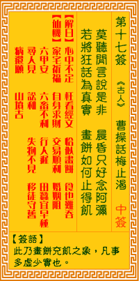

观音灵签第十七签 【曹操话梅止渴】 |
 | |||
莫听闲言与是非 晨昏只好念阿弥 若将妄语为真实 画饼如何疗得饥 |
||||
| 【吉凶】 | 中下签 | 【宫位】 | 卯宫 | |
| 【签语】 | 此卦画饼充饥之象，凡事多虚少实也。 | |||
| 【解曰】 | 心中不定 枉看经文 恰似书饼 食也难吞 | |||
| 【仙机】 | 此签家宅祈福，自身顺利，求财顺利，交易慢，婚姻阻，六甲安，田蚕宜早种，六畜不利，行人迟，寻人见，讼宜和，失物不见，移徙守 旧，疾病还愿，山坟吉。 | |||
| 【详解】 | 别听那些流言蜚语是是非非，日夜勤行专念佛号安定自己的身心;如果把一切的虚妄执着假象都信以为真，就好像在纸上画的大饼要如何能够止住饥饿。 心中不定，枉费看经，只是画饼充饥之象。凡事虚少实。 如心中不定则看经也枉费心神是已。何以为之。又如人之妄语信之为真。岂非如画饼之充饥。焉得饱食。因时运之未到。时有吉。时有凶。劝尔宜晨昏多念阿弥陀佛。莫听闲言及是非。方可安行。凡事虚少实也。 此签有”居心叵测”之意。奉劝当事人，勿心存歹念。有些人会因为别人的才华或才能高过自己而眼红猜忌、又害怕就此被取代，因此处心积虑，或百般阻挠、或肆放谣言。须知人与人相处，最可贵之处在于互信互助、共同扶持，最忌暗箭伤人、尔虞我诈。凡事应持心正直，起心动念皆向善。从自身做起，不道人长短、不搬弄是非。与人合作共事方面，保持和谐良性切磋，见贤思齐、截长补短。多替他人着想，勿存一己之私。 | |||
| 【典故】 | 曹操带着军队去打仗，正值天气炎热的时节，士兵们汗流浃背，口干舌燥，但却找不到一滴水喝。士兵们个个筋疲力尽，几乎连路的力气 也没有了。这时，曹操想出一个主意，下令说：前面就是一大片梅树林，到了那里就可以吃梅解渴了。士兵们听到吃梅子，口水直流。便不觉得口渴了。《三国演义》故事 | |||